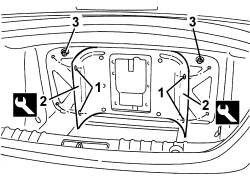
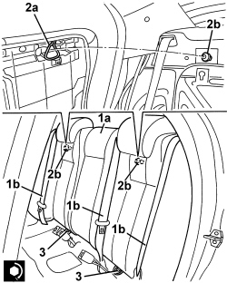

7050A19 REAR SEAT BACKREST - R.R
- Path
- Procedures > 70 FITTINGS > 7050 REAR SEATS > 7050A REAR SEAT ASSEMBLY > 7050A19 REAR SEAT BACKREST - R.R
- Kind
- repair procedure (removal / refitting; the operation number is the code)
- Applies to
- all engines; all production periods
- Interactive page
- https://sloeber94.github.io/elrnDB/alfa/159/en/#/939011324
Applies to: all engines; all production periods
 Removing
Removing
 Refitting
RefittingOp. 7050A20 ONE-PIECE REAR SEAT CUSHION - R.R.
For the left and right sides.
Op. 7040L44 REAR DOOR RUNNING BOARD (ONE), LEFT OR RIGHT - R.R.
- Open the boot lid.
1. Release the retaining buttons using the special tool.
Tool | Description | Function | Validity |
|---|---|---|---|
1823015000 | Knife | Retainer removal |
2. Move the two side ends of the rear trim slightly.
3. Undo the upper nuts fixing the rear seat backrest.

Applies to: all engines; all production periods
1. Working from inside the vehicle, undo the lower bolts fixing the backrest.
2. Raise the backrest (2a) and release the brackets (2b) from the attachment pins (2c).
3. Remove the backrest (2a) releasing it from the seat belts (3a).

Applies to: all engines; all production periods
Refitting
Removing- Check that the rear seat backrest is not damaged.
1. Place the rear seat backrest (1a) in position passing it under the rear seat belts (1b).
2. Lower the backrest attaching the brackets (2a) to the attachment pins (2b).
3. Tighten the lower backrest fixing bolts.
Component | Fastening | dia | Value (daNm) | Validity |
|---|---|---|---|---|
REAR SEAT BACKREST | Bolt | M10x20 | 3.6 ÷ 4.4 |

Applies to: all engines; all production periods
1. Tighten the upper backrest fixing nuts.
Component | Fastening | dia | Value (daNm) | Validity |
|---|---|---|---|---|
REAR SEAT BACKREST | Nut | M8 | 2.2 ÷ 2.6 |
2. Place the two side ends (2a) of the luggage compartment rear trim in position and attach the retaining buttons (2b).

Applies to: all engines; all production periods
- Close the boot lid.
Op. 7040L44 REAR DOOR RUNNING BOARD (ONE), LEFT OR RIGHT - R.R.
Topics linked from this page (2)
- 7040L44 REAR DOOR RUNNING BOARD (ONE), LEFT OR RIGHT - R.R.
- 7050A20 ONE-PIECE REAR SEAT CUSHION - R.R.
Topics that link to this page (20)
- 5505C28 ENGINE COMPARTMENT AND A.B.S BUILT-IN WIRING - R.R.
- 5505C41 PASSENGER COMPARTMENT WIRING - R.R
- 5570T27 AERIAL SUPPORT - R.R
- 5570T31 AERIAL COAXIAL LEAD - R R
- 5580C50 WINDOW BAG MODULE (ONE) LH OR RH - R.R
- 5580H16 REAR BUZZER OF PARKING OBSTICLE DETECTION DEVICE R R
- 5580T40 BOSE SOUND SYSTEM SUBWOOFER - R.R.
- 7030B12 SLIDING ROOF (ASSEMBLY) - R+R
- 7030B40 DRAINAGE CHANNEL - R R
- 7030B50 SUN ROOF SLIDING GUIDE (ONE), LH OR RH - R.R
- 7035B14 REAR WINDOW GLASS - R.R INCLUDES CLEANING HOUSING
- 7040H10 ROOF PANEL LINING - R.R.
- 7040H16 ROOF PANEL LINING FOR VERSIONS WITH SUN ROOF - R.R
- 7040H42 REAR PILLAR TRIM (ONE), LEFT OR RIGHT- R.R
- 7040H80 REAR PARCEL SHELF - R.R.
- 7050A10 REAR SEAT - R+R
- 7050A42 REAR BACKREST CATCH DEVICE (ONE) - R+R
- 7050D30 TRIM FOR REAR SEAT BACKREST - R.R.
- 7065B10 REAR SEAT BELT (ONE), LEFT OR RIGHT - R.R.
- 7065B18 CENTRE REAR SEAT BELT - R.R.